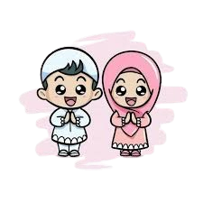
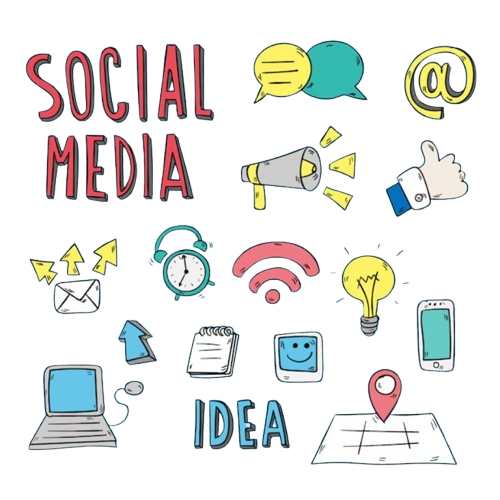

Pendahuluan
Di era digital saat ini, remaja muslim perlu bijak dalam memanfaatkan teknologi dan media sosial. Dunia maya harus menjadi sarana untuk menebar kebaikan, menambah ilmu, dan memperkuat iman, bukan malah menjadi tempat kita untuk lalai atau berbuat dosa.
Dengan menjaga akhlak dan menerapkan nilai-nilai islam, kita dapat menjadi remaja yang baik, baik di dunia nyata maupun di dunia maya.
Apa Itu Remaja Muslim?

Remaja muslim adalah generasi muda yang beriman kepada Allah dan menjadikan ajaran Islam sebagai pedoman hidupnya.
Allah SWT. berfirman di dalam Al-Qur'an yang artinya:
"Kami kisahkan kepadamu (Muhammad) cerita ini denga benar. Sesungguhnya mereka adalah para pemuda yang beriman kepada Tuhan mereka, dan Kami tambah pula untuk mereka petunjuk". (QS. Al-Kahfi: 13)
Dan kami teguhkan hati mereka ketika mereka berkata:
"Tuhan kami adalah Tuhan seluruh langit dan bumi.". (QS. Al-Kahfi: 13)
Apa Itu Era Digital?
Era digital adalah masa dimana sebagian besar aktivitas manusia, baik pribadi maupun umum, bergantung pada teknologi digital.
Allah SWT. berfirman di dalam Al-Qur'an yang artinya:
"Bacalah! Dengan (menyebut) nama Tuhanmu yang menciptakan.".
"Dia menciptakan manusia dari segumpal darah.".
"Bacalah! Dan Tuhanmulah Yang Mahamulia.".
"Yang megajar (manusia) dengan pena.".
"Dia mengajarkan manusia apa yang tidak diketahuinya.". (QS. Al-Alaq: 1-5)
Etika dan Akhlak Remaja Muslim di Era Digital

Adapun etika dan akhlak yang harus dimiliki setiap remaja muslim di era digital adalah sebagai berikut:
Menjaga Lisan dan Tulisan
Setiap kata adalah tanggung jawab, maka remaja muslim harus bijak dalam bersosialisasi secara langsung maupun di media sosial. Dengan cara menjauhi ujaran kebencian, menyakiti perasaan, dan fitnah.
Dari Abu Hurairah, Rasulullah SAW bersabda yang artinya:
"Barang siapa yang beriman kepada Allah dan Hari Akhir maka hendaklah ia berkata baik atau diam.". (Muttafaq 'alaih: Al-Bukhari, no. 6018; Muslim, no. 47)
Bijak Menggunakan Media Sosial
Gunakan media sosial hanya untuk hal positif. Contohnya:
- Berbagi ilmu.
- Motivasi.
- Dakwah ringan.
Dari Jabir bin Abdillah, Rasulullah SAW bersabda yang artinya:
"Sebaik-baiknya manusia adalah yang paling bermanfaat bagi manusia lainnya.". (HR. Ath-Thabrani dalam Kitab Al-Awsath)
Mengatur Waktu Untuk Produktivitas
Waktu adalah amanah. Jangan habiskan hanya untuk menatap layar atau bermalas-malasan. Gunakan teknologi untuk belajar, berkarya, dan mendekatkan diri kepada Allah SWT.
Allah SWT. berfirman dalam Al-Qur'an yang artinya:
"Demi masa.".
"Sungguh, manusia berada dalam kerugian.".
"Kecuali orang-orang yag beriman dan mengerjakan kebajikan, serta saling menasihati dalam kebenaran dan kesabaran.". (QS. Al-'Asr: 1-3)
Kesimpulan
Menjadi muslim muslim yang baik di era digital berarti mampu menyeimbangkan iman dan teknologi. Dunia digital bukan untuk dijauhi, tetapi digunakan secara bijak sesuai ajaran islam.
Dengan menjaga akhlak dan menyebarkan kebaikan di media sosial, remaja muslim dapat menjadi generasi yang beriman, berilmu, dan berakhlak baik, baik di dunia nyata maupun di dunia maya.
Abstrak
Perkembangan teknologi digital memengaruhi perilaku sosial remaja muslim dalam kehidupan sehari-hari. Aktivitas tidak hanya berlangsung di dunia nyata, tetapi juga melalui media sosial dan platform digital.
Blog ini bertujuan menjelaskan konsep perilaku remaja muslim yang berakhlak baik berdasarkan nilai islam serta penerapannya pada dua ruang kehidupan, ofline dan online. Hasil pembahasan menunjukkan bahwa etika Islam seharusnya menjadi landasan dalam setiap interaksi, baik tatap muka maupun interaksi digital.
Kata Kunci: remaja muslim, akhlak, etika digital, dunia maya.
Landasan Teori
Dalam Islam, akhlak merupakan dasar pembentukan karakter. Nabi Muhammad SAW bersabda "Sesungguhnya aku diutus untuk menyempurnakan akhlak yang mulia." (HR. Ahmad). Akhlak dalam konteks digital dikenal dengan istilah etika digital, yaitu prinsip moral yang mengatur perilaku saat menggunakan media digital.
Perkembangan teknologi menuntut remaja muslim untuk memahami bahwa akhlak bukan hanya dipraktikkan secara fisik, tetapi juga ketika berinteraksi menggunakan teknologi.
Pembahasan
Remaja muslim di dunia nyata perlu menjaga sopan santun, menghormati orang tua dan guru, menjauhi pergaulan negatif, serta menjalankan ibadah sebagaimana diperintahkan agama. Di sisi lain, aktivitas di dunia maya juga harus diarahkan pada kebaikan seperti, tidak menyebarkan hoaks, tidak menghina orang lain, menjaga kebersihan pandangan dari konten maksiat, serta menggunakan internet untuk aktivitas yang bermanfaat seperti belajar, menambah wawasan, atau berdakwah.
Jejak digital yang tercipta menjadi cerminan karakter, sehingga Islam menekankan tanggung jawab moral terhadap setiap tindakan, termasuk tindakan digital.
Kesimpulan
Menjadi remaja muslim yang baik berarti menjaga akhlak dalam dua ruang kehidupan sekaligus, yaitu dunia nyata dan dunia maya. Nilai Islami harus menjadi standar perilaku baik tatap muka maupun saat menggunakan internet. Jika akhlak diterapkan secara konsisten pada dua dimensi ini, maka remaja muslim dapat berkembang menjadi generasi yang beretika, bermartabat, dan mampu memberikan kontribusi positif bagi masyarakat.